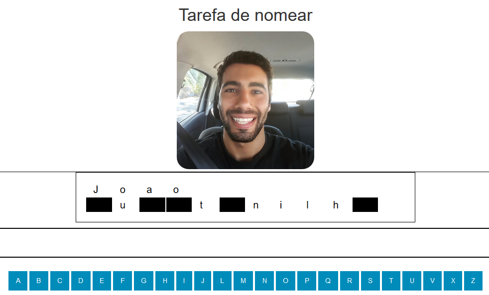
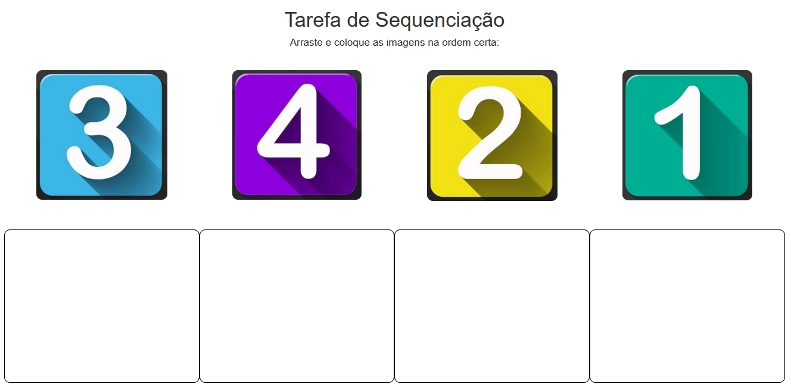
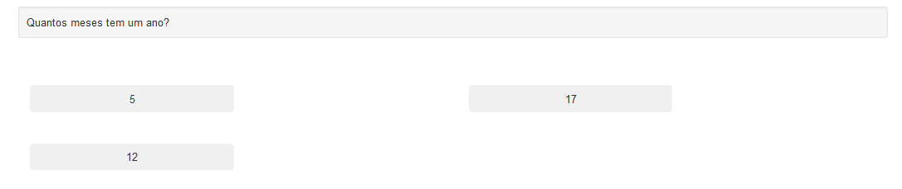
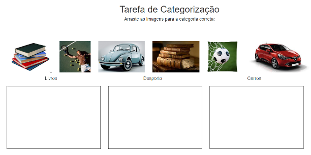
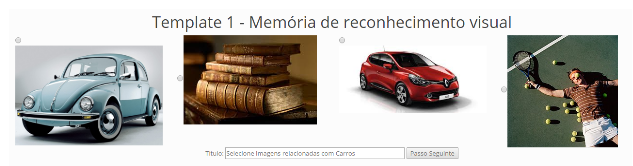

For Doctors: ● FE-04 - Patient management ● FE-05 - Task customization and assignment area ● FE-06 - Patient progress monitorization area
For Patients: ● FE-07 - Simple interaction ● FE-08 - “Ready to go” tasks ● FE-09 - Positive feedback
In this task, the patient sees a photo of someone that is his relative or friend and tries to discover his name by some hidden words. When he clicks on the black box that misses one letter, he (or the doctor if he can’t do it by himself) clicks again on the letter that is associated to that hidden letter. If he wrongs, appears a message that tries to motivate him and not let him giving up. If he hits, appears a feedback message that encourage to conclude it and saying that he is doing great.
In this task, the patient have multiple images to be drag and dropped into some boxes down below the images. If he can’t do it by himself, the doctor must do it for him by his choice of answer. If he drag and drop one image to the wrong box he gets a message saying to try again. If he gets all the correct boxes, he receives a feedback message saying that he has successfully done the task. The images can be numbers, daily sequence tasks or anything that the doctors think that are good to get the patients’ recover.
In this task, the patient have one question and a possible of 2, 3 or 4 answers and have to guess what is the correct one. The questions may be whatever the doctors choose for the respective doctors. May be daily questions or questions about their families or their personal life. If the patient hits he receives a feedback message that says the answer is correct. If he gets the wrong answer the patient has more tries to guess and he receives a message to not give up.
In this task, the patient have multiple images to be drag and dropped into some boxes down below the images. The images must be dropped into the box that is the same category of the image. If he can’t do it by himself, the doctor must do it for him by his choice of answer. If he drag and drop one image to the wrong box he gets a message saying to try again. If he gets all the correct boxes, he receives a feedback message saying that he has successfully done the task. The images can be anything that the doctors think that are good to get the patients’ recover.
In this task, the patient have multiple images and he has to select the ones that are related to the category shown below the images. If he can’t do it by himself, the doctor must do it for him by his choice of answer. If he selects one wrong image he gets a message saying to try again. If he gets all the correct images, he receives a feedback message saying that he has successfully done the task. The images can be related to the patients’ family or their personal life, daily tasks to improve their daily abilities or anything that the doctors think that are good to get the patients’ recover.
